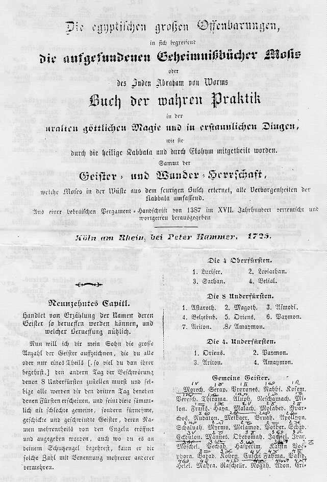

Der geheime Schlüssel von Franz Bardon.
Die wahren Namen der Genien von Franz Bardon's PME.
(Bücher und
Kontaktadresse von Emil Stejnar.)
Emil Stejnar,
der bekannte österreichischer Bardonist, entdeckte daß Bardon
die Namen von Engeln nach einem einfachen Geheimkode verschlüsselte,
bevor er diese an seine Freunde übermittelte. Leider verstarb Bardon,
bevor er diesen Schlüssel Herman Bauer mitteilen konnte, der der Herausgeber
von Bardons "Praxis der magischen Evokation" war/ist. (Richard Tschudi,
leicht verändert von PA).
Als Steinar mit den Intelligenzen der Mond-, Sonnen-, und Erdgürtelsphäre
arbeitete, bemerkte er, daß es sich um Genien handelt, deren Namen
schon in alten magischen Standardwerken wie z.B. Agrippa und Abramelin,
angegeben sind.
Durch Anwendung des Verschlüsselungscodes konnte er weiters nachweisen,
daß die Namen der Genien der Sonnensphäre mit den Namen von
Fixsternen übereinstimmen.

Der Verschlüsselungscode:
Diesen Verschlüsselungscode verwendete Bardon um die Namen von Genien
und Engeln an seine Schüler und Freunde mitzuteilen.
| A = E |
F = V |
LH = SCH |
R = T |
V = D |
| B = R |
G = W |
M = L |
S = N |
W = P |
| CH = H |
I = O |
N = G |
T = B |
Y = J |
| D = M |
K = Z |
O = U |
TZ = K |
ZH = CH |
| E = A |
L = S |
P = F |
U = I |
Z = C |
Die Namen der Genien der Sonnensphäre: = Fixsterne
Der Name des ersten Geniusd der Sonnenspäre in Bardons PME ist Emnasut.
Wendet man den oben angeführten Schlüssel auf diesen Namen an,
dann bekommt man den Namen ALGENIB, ein Fixstern im Zeichen des Widders.
Der 2. Genius ist Lubech der zu SIRAH, einem weiteren Fixstern, wird.
Der 3. Sonnengenius ist nach Bardon Teras, der nach Anwendung des Schlüssels
zu BATEN wird, auch ein Fixstern im Zeichen des Widders.
Usw, usw ...
Stejnar: "Die Fixsterne sind allerdings nicht die wirklichen Namen der
Genien der Sonnensphäre, sie dienen nur, um die beste Zeit für
deren Evokation zu berechnen."
Die komplette Liste der Namen der Sonnen Genien - Fixstern Namen.
Quelle: Schutzengelbuch von Emil Stenjar
|
Name bei Bardons PME |
entspricht dem Fixsstern |
| 1. |
EMNASUT |
ALGENIB |
| 2. |
LUBECH |
SIRRAH |
| 3. |
TERAS |
RATEM KAITOS |
| 4. |
DUBEZH |
MIRACH |
| 5. |
AMSER |
EL NATH |
| 6. |
EMEDETZ |
ALAMAK |
| 7. |
KESBETZ |
ZAURAK |
| 8. |
EMAYISA |
ALKYONE |
| 9. |
EMVETAS |
ALDEBARAN |
| 10. |
BUNAM |
RIGEL |
| 11. |
SERYTZ |
NATH |
| 12. |
WYBIOL |
PROPUS |
| 13. |
LUBUYIL |
SIRIUS |
| 14. |
GELER |
WASAT |
| 15. |
WYBITZIS |
PROCYON |
| 16. |
WYBALAP |
PRÄSEPE |
| 17. |
TZIZHET |
KOCHAB |
| 18. |
DABETZ |
MERAK |
| 19. |
BANAMOL |
REGULUS |
| 20. |
EMUYIR |
ALIOTH |
| 21. |
DUBEK |
MIZAR |
| 22. |
EMTZEL |
ALKOR |
| 23. |
TASAR |
BENET |
| 24. |
FUSRADU |
VINDEMIATRIX |
| 25. |
FIRUL |
BOOTIS |
| 26. |
EBYTZYRIL |
ARCTURUS |
| 27. |
LOHMTAB |
SCHALE |
| 28. |
TZYBAYOL |
KREUZ |
| 29. |
GENA |
WAAGE |
| 30. |
KASREYOBU |
ZENTAURI |
| 31. |
ETZYBETH |
AKRAB |
| 32. |
BALEM |
RAS ALGETHI |
| 33. |
BELEMCHE |
RASAL HAGUE |
| 34. |
ARESUT |
ETAMIN |
| 35. |
TINAS |
BOGEN |
| 36. |
GANE |
WEGA |
| 37. |
EMTUB |
ALBIRIO |
| 38. |
ERAB |
ATAIR |
| 39. |
TYBOLYR |
BRUST |
| 40. |
CHYBIS |
HORN |
| 41. |
SELHUBE |
SAD NASCHIRA |
| 42. |
LEVUM |
SADALMELEK |
| 43. |
VASAT |
DENEB |
| 44. |
EZHABSAB |
ACHERNAR |
| 45. |
DEBYTZET |
MARKAB |
Tim Scott (email
Adresse:tims@crow-caw.com) überprüfte die Entdeckung Stejnars
mit Hilfe eines kleinen Computerprogramms und kam zu folgenden Ergebnissen:
Tim Scott: Ich habe ein kleines Programm geschrieben um alle Namen aus
Bardons PME zu übersetzten und habe diese dann mit den Fixsternnamen
aus dem Buch "The Fixed Stars and Constellations in Astrology" verglichen.
Ich glaube sie werden die Ergebnisse interessant finden.
Ich habe Bardons Sonnengeniennamen (Spalte 1) genommen und sie dekodiert.
Ich habe dann versucht die Namen in Robson's Buch "The Fixed Stars and
Constellations in Astrology" (Die Fixsterne und Konstellationen in
der Astrologie) zu finden. Wie man sieht, ist es kristallklar, daß
sich die Namen entsprechen, einige sogar ganz genau. Die Unterschiede können
durch (a) Fehler, (b) unterschiedliche Schreibweise der Fixsternnamen in
Deutsch und Englisch und (c) Sterne, die Robson nicht anführt, erklärt
werden. (Ich glaube daß einige der unten angeführten Namen ziemlich
bekannt sind, aber ich habe meinen guten Astronomischen Führer momentan
nicht zur Hand.)
Die Gradeinteilung ist als Tierkreiszeichen:Grad (Widder=1, Stier=2,
etc.) angegeben. Ich habe 1 Grad zu der Position von 1920 addiert. Sie
werden bemerken, daß die Namen so ziemlich in der Reihe des Zodiaks
aufeinanderfolgen.
| Nach Bardon |
dekodiert |
Anmerkungen |
Zeichen:Grad |
| EMNASUT |
ALGENIB |
ALGENIB |
1 : 09 |
| LUBECH |
SIRAH |
SIRACH ? |
|
| TERAS |
BATEN |
BATEM KAITOS |
1 : 22 |
| DUBEZH |
MIRACH |
MIRACH |
2 : 01 |
| AMSER |
ELNAT |
probably EL NATH |
|
| EMEDETZ |
ALAMAK |
ALAMAK |
2 : 14 |
| KESBETZ |
ZANRAK |
|
|
| EMAYISA |
ALEJONE |
ALCYONE ? |
3 : 00 |
| EMVETAS |
ALDABEN |
ALDEBAREN ? |
3 : 01 |
| BUNAM |
RIGEL |
RIGEL |
|
| SERYTZ |
NATJK |
|
|
| WYBIOL |
PJROUS |
|
|
| LUBUYIL |
SIRIJOS |
SIRIUS |
4 : 14 |
| GELER |
WASAT |
WASAT |
4 : 18 |
| WYBITZIS |
PJROKON |
PROCYON ? |
4 : 25 |
| WYBALAP |
PJRESEF |
PRAESAEPE ??? |
5 : 07 |
| TZIZHET |
KOCHAB |
KOCHAB |
|
| DABETZ |
MERAK |
|
|
| BANAMOL |
REGELUS |
REGULUS |
6 : 00 |
| EMUYIR |
ALIJOT |
|
|
| DUBEK |
MIZAR |
MIZAR |
|
| EMTZEL |
ALKAS |
|
|
| TASAR |
BENET |
|
|
| FUSRADU |
YINTEMI |
|
|
| FIRUL |
VOTIS |
|
|
| EBYTZYRIL |
ARJKJTOS |
ARCTURUS ? |
7 : 24 |
| LOHMTAB |
SCHULBER |
|
|
| TZYBAYOL |
KJREJUS |
|
|
| GENA |
WAGE |
WEGA/VEGA ? |
|
| KASREYOBU |
ZENTAJURI |
ALPHA CENTAURI ? |
|
| ETZYBETH |
AKJRAB |
|
|
| BALEM |
RESAL |
|
|
| BELEMCHE |
RASALHA |
SEEMS LIKELY TO BE RASALHAGUE |
9 : 22 |
| ARESUT |
|
|
|
| TINAS |
|
|
|
| GANE |
|
|
|
| EMTUB |
|
|
|
| ERAB |
|
|
|
| TYBOLYR |
|
|
|
| CHYBIS |
|
|
|
| SELHUBE |
|
|
|
| LEVUM |
|
|
|
| VASAT |
|
|
|
| EZHABSAB |
|
|
|
| DEBYTZET |
MARJKAB |
MARKAB ? |
12 : 23 |
Die Genien der Mondsphäre
Nach Stejnar's Entdeckung sind die Bardon's Genien der Mondsphäre
mit den Namen der Mondstationen, wie zum Beispiel von Agrippa angeführt,
identisch.
(Quelle: Agrippa von Nettesheim "Occulta Philosophia"; Namen der Mondstationen:
Buch 2, Kapitel 33 und 46; Engelnamen: Buch 3 Kapitel 24. [Die folgenden
Engelsnamen sind nach Stejnar zitiert. Meine Ausgabe von Agrippa gibt andere
Engelsnamen als die von Stejnar angeführten an. PA]
|
Zeichen, Grad |
Name des Genius nach Bardon PME |
Mondstation Name1 |
Mondstation Name 2 |
Intelligenz |
| 1. |
0° Widder |
EBVAB |
ALNATH |
--- |
Gabriel |
| 2. |
12° 51' 22'' Widder |
EMTIRCHEYUD |
ALBOTHAIM |
ALBOCHAM |
Aniziel |
| 3. |
25° 42' 51'' Widder |
EZHESEKIS |
ACHOMAZONE |
ATHORAYE |
Geniel |
| 4. |
8° 34' 17'' Stier |
EMVATIBE |
ALDEBTDORAM |
ADELAMEN |
Azariel |
| 5. |
21° 25' 43'' Stier |
AMZHERE |
ALCHATA(YA) |
ALBACHAYA |
Sekeliel |
| 6. |
4° 17' 9'' Zwillinge |
ENCHEDE |
ALHAMA or ALHANNA |
ALCHAYA |
Dirachiel |
| 7. |
17° 8' 34'' Zwillinge |
EMRUDUE |
ALDIMIACH |
ALARZACH |
Michael |
| 8. |
0° Krebs |
ENEYE |
ALKAYA or ALNAZA |
ANATRACHYA |
Amnediel |
| 9. |
12° 51' 22'' Krebs |
EMZHEBYP |
ALCHARF or ALCHARPH |
ARCHAAM |
Barbiel |
| 10. |
25° 42' 51'' Krebs |
EMNYMAR |
ALGLETH or AGLEBH |
AGELIACHE |
Ardefiel |
| 11. |
8° 34' 17'' Löwe |
EBVEB |
ARDARPH or ARDAF |
AZOBRA |
Neciel |
| 12. |
21° 25' 43'' Löwe |
EMKEBPE |
ALZARPHA |
--- |
Abdizuel |
| 13. |
4° 17' 9'' Jungfrau |
EMCHEBA |
ALHAYRE |
--- |
Jazekiel |
| 14. |
17° 8' 34'' Jungfrau |
EZHOBAR |
ACHURET |
ARIMETH |
Ergediel |
| 15. |
0° Waage |
EMNEPE |
ALGARPHA |
ALGRAPHA |
Ataliel |
| 16. |
12° 51' 22'' Waage |
ECHOTASA |
AHUBENE |
AZUBENE |
Azernel |
| 17. |
25° 42' 51'' Waage |
EMZHOM |
ALCHAS |
ALCHIL |
Adriel |
| 18. |
8° 34' 17'' Skorpion |
EMZHIT |
ALCHOB or ALTOB |
ALCHAS |
Egebiel |
| 19. |
21° 25' 43'' Skorpion |
EZHEME |
ALCHALA |
ALLATHA |
Amuziel |
| 20. |
4° 17' 9'' Schütze |
ETSACHEYE |
ABNAHAYA |
--- |
Kiriel |
| 21. |
17° 8' 34'' Schütze |
ETAMREZH |
ALBELDACH(I) |
ABEDA |
Bethunael |
| 22. |
0° Steinbock |
RIVATIM |
ZODEBOLUCH |
ZANDELDENA |
Geliel |
| 23. |
12° 51' 22'' Steinbock |
LITEVICHE |
SOBADOLA or SEBADOLA |
ZOBRACH |
Requiel |
| 24. |
25° 42' 51'' Steinbock |
ZHEVEKIYEV |
CHADEZOAD |
SADABATH |
Abrimael |
| 25. |
8° 34' 17'' Wassermann |
LAVEMEZHU |
SADALACHIA |
SADALABRA |
Aziel |
| 26. |
21° 25' 43'' Wassermann |
EMPEBYN |
ALPHARG |
PHTAGAL MOCADEN |
Tagriel |
| 27. |
4° 17' 9'' Fische |
EMZHABE |
ALCHARYA |
ALHALGALMOAD |
Athemiel |
| 28. |
17° 8' 34'' Fische |
EMZHER |
ALCHAT or ALCHAL |
ALBOTHAM |
Raphael |
Die 360 Vorsteher der Erdgürtelzone.
Besonders interessant ist die Entdeckung Stejnar's, daß alle 360
Vorsteher der Erdgürtelzone in einer alten Ausgabe von "Abramelin"
angeführt werden. Es handelt sich dabei um die Abramelin-Ausgabe von
Peter Hammer aus dem Jahre 1725.
Bardon führt die Genien in einer anderen Reihenfolge an: er führt
sie vom 1. bis zum 30. Grad jedes Tierkreiszeichens an. Andererseits sind
bei Peter Hammer's Abramelinausgabe jeweils alle Genien des ersten Grades
aller Tierkreiszeichen, dann alle Genien des 2. Grades durch alle Tierkreiszeichen
usw.
Steinar führt dazu aus, daß Abramelin's Methode einige Vorteile
hat weil die Genien eines bestimmten Grades aller Tierkreiszeichen ähnliche
Aufgaben erfüllen und sich daher in engem Zusammenhang befinden. Der
erste und zweite Grad eines Zeichens ist positiv elektrisch und alle Vorsteher
der ersten zwei Grade arbeiten mit dem elektrischen Fluid und beeinflussen
die Entfaltung von Fähigkeiten wie Kreativität, Persönlichkeit
und Macht. Die 9., 10., 19., 20., 29. und 30. Grade sind dem Element Wasser
unterstellt und vom magnetischen Fluid beeinflußt.
Es gibt verschiede, heute im Buchhandel erhältliche Ausgaben von
Abramelin:
-
"Buch Abramelin neu eingedeutscht" 1995 published by Neue Erde, Saarbrücken)
-
"Abramelin" by Peter-R. König; ISBN 3-927890-24-3; available through:
ARW, box 500 107, D-80971 München, Germany; Internet version yet without
the facsimile of Peter Hammers Abramelin (1725): see
http://www.cyberlink.ch/~koenig/
; mailto: koenig@cyberlink.ch)
Die folgenden 2 Scans stammen aus der obengenannten Abramelinausgabe von Peter
Hammer. Die handschriftlichen Zusätze stammen von Emil Stejnar.

Siehe auch "die Geister des Luftelement bei Bardon" (bisher nur auf
englisch, sollte bald auch auf deutsch abrufbar sein): spirits
of the air-element.
Es folgt hier nun ein Vergleich der von Bardon angegeben Namen für
die 360 Erdgürtelherrscher bei Bardon und der Namen bei Hammer's Abramelin,
Edition von Peter Hammer, Köln am Rhein, 1725.
| ABRAMELIN |
BARDON |
Nr. PME |
Grad/Zeichen |
| Morech |
Morech |
25 |
1° Widder |
| Serap |
Serap |
55 |
1° Stier |
| Proxones |
Proxones |
85 |
1° Zwillinge |
| Nabbi |
Nablum |
115 |
1° Krebs |
| Kosem |
Kosem |
145 |
1° Löwe |
| Peresch |
Peresch |
175 |
1° Jungfrau |
| Thirama |
Thirana |
205 |
1° Waage |
| Aluph |
Aluph |
235 |
1° Skorpion |
| Neschamach |
Neschamah |
265 |
1° Schütze |
| Milon |
Milon |
295 |
1° Steinbock |
| Frasis |
Frasis |
325 |
1° Wassermann |
| Haya |
Haja |
355 |
1° Fische |
| Malach |
Malacha |
26 |
2° Widder |
| Molabed |
Molabeda |
56 |
2° Stier |
| Yparchos |
Yparcha |
86 |
2° Zwillinge |
| Nudaton |
Nudatoni |
116 |
2° Krebs |
| Methaer |
Methaera |
146 |
2° Löwe |
| Bruah |
Bruahi |
175 |
2° Jungfrau |
| Apollyon |
Apollyon |
206 |
2° Waage |
| Schaluah |
Schaluah |
236 |
2° Skorpion |
| Myrmo |
Myrmo |
266 |
2° Schütze |
| Melamod |
Melamo |
296 |
2° Steinbock |
| Pother |
Pother |
326 |
2° Wassermann |
| Schad |
Schad |
355 |
2° Fische |
| Eckdulon |
Ecdulon |
27 |
3° Widder |
| Mannes |
Manmes |
57 |
3° Stier |
| Obedomah |
Obedomah |
87 |
° Zwillinge |
| Jachiel |
Jachil |
117 |
3° Krebs |
| Jvar |
Jvar |
147 |
3° Löwe |
| Moschel |
Moschel |
177 |
3° Jungfrau |
| Pechah |
Peekah |
207 |
3° Waage |
| Hasperim |
Hasperim |
237 |
3° Skorpion |
| Karsin |
Kathim |
267 |
3° Schütze |
| Posphora |
Porphora |
297 |
3° Steinbock |
| Badat |
Badet |
327 |
3° Wassermann |
| Kohen |
Kohen |
357 |
3° Fische |
| Cuschi |
Lurchi |
28 |
4° Widder |
| Fahma |
Faluna |
58 |
4° Stier |
| Pakid |
Padidi |
88 |
4° Zwillinge |
| Helel |
Helali |
118 |
4° Krebs |
| Mahra |
Mahra |
148 |
4° Löwe |
| Raschgear |
Raschea |
178 |
4° Jungfrau |
| Nogah |
Nogah |
208 |
4° Waage |
| Adon |
Adae |
238 |
4° Skorpion |
| Erimites |
Erimites |
268 |
4° Schütze |
| Trapis |
Trapi |
298 |
4° Steinbock |
| Nagid |
Naga |
328 |
4° Wassermann |
| Erahim |
Echami |
358 |
4° Fische |
| Aspadit |
Aspadit |
29 |
5° Widder |
| Nasi |
Nasi |
59 |
5° Stier |
| Peralit |
Peralit |
89 |
5° Zwillinge |
| Emfatison |
Emfalion |
119 |
5° Krebs |
| Paruch |
Paruch |
149 |
5° Löwe |
| Girmil |
Girmil |
179 |
5° Jungfrau |
| Tolet |
Tolet |
209 |
5° Waage |
| Helmis |
Helmis |
239 |
5° Skorpion |
| Asinel |
Asinel |
269 |
5° Schütze |
| Irminon |
Jonion |
299 |
5° Steinbock |
| Asturel |
Asturel |
329 |
5° Wassermann |
| Flabison |
Flabison |
359 |
5° Fische |
| Nascelon |
Nascela |
30 |
6° Widder |
| Lomiol |
Conioli |
60 |
6° Stier |
| Ysmirk |
Isnirki |
90 |
6° Zwillinge |
| Pliroki |
Pliroki |
120 |
6° Krebs |
| Asloton |
Aslotama |
150 |
6° Löwe |
| Zagrion |
Zagriona |
180 |
6° Jungfrau |
| Parmasas |
Parmasa |
210 |
6° Waage |
| Sarasim |
Sarasi |
240 |
6° Skorpion |
| Goriolon |
Geriola |
270 |
6° Schütze |
| Asolop |
Afolon |
300 |
6° Steinbock |
| Liriell |
Liriell |
330 |
6° Wassermann |
| Alogill |
Alagill |
360 |
6° Fische |
| Ogologon |
Opollogon |
31 |
7° Widder |
| Larubos |
Carubot |
61 |
7° Stier |
| Morilon |
Morilon |
91 |
7° Zwillinge |
| Losimon |
Losimon |
121 |
7° Krebs |
| Kagaras |
Kagaros |
151 |
7° Löwe |
| Igilon |
Ygilon |
181 |
7° Jungfrau |
| Gesegas |
Gesegos |
211 |
7° Waage |
| Ugefor |
Ugefor |
241 |
7° Skorpion |
| Asorega |
Asoreg |
271 |
7° Schütze |
| Paruchu |
Paruchu |
301 |
7° Steinbock |
| Siges |
Siges |
331 |
7° Wassermann |
| Atherom |
Atherom |
361 |
7° Fische |
| Ramarath |
Ramara |
32 |
8° Widder |
| Igavog |
Jajaregi |
62 |
8° Stier |
| Goloma |
Golema |
92 |
8° Zwillinge |
| Kilik |
Kiliki |
122 |
8° Krebs |
| Romesaf |
Romasara |
152 |
8° Löwe |
| Alpas |
Alpaso |
182 |
8° Jungfrau |
| Soterion |
Soteri |
212 |
8° Waage |
| Amilles |
Arkillee |
242 |
8° Skorpion |
| Ramages |
Ramage |
272 |
8° Schütze |
| Promathos |
Pormatho |
302 |
8° Steinbock |
| Methoseph |
Metosee |
332 |
8° Wassermann |
| Paraschon |
Porascho |
362 |
8° Fische |
| Amamil |
Anamil |
33 |
9° Widder |
| Orienell |
Orienell |
63 |
9° Stier |
| Tinira |
Timiran |
93 |
9° Zwillinge |
| Dramos |
Oramos |
123 |
9° Krebs |
| Anemalon |
Anemalon |
153 |
9° Löwe |
| Kirik |
Kirek |
183 |
9° Jungfrau |
| Bubamabub |
Batamabub |
213 |
9° Waage |
| Ranar |
Ranar |
243 |
9° Skorpion |
| Namalon |
Namalon |
273 |
9° Schütze |
| Ampholion |
Ampholion |
303 |
9° Steinbock |
| Abusis |
Abusis |
333 |
9° Wassermann |
| Exention |
Egention |
363 |
9° Fische |
| Taborix |
Tabori |
34 |
10° Widder |
| Concavion |
Concario |
64 |
10° Stier |
| Oholem |
Golemi |
94 |
10° Zwillinge |
| Tarato |
Tarato |
124 |
10° Krebs |
| Tabbat |
Tabbata |
154 |
10° Löwe |
| Buriub |
Buriuh |
184 |
10° Jungfrau |
| Oman |
Omana |
214 |
10° Waage |
| Carasch |
Caraschi |
244 |
10° Skorpion |
| Dimurgos |
Dimurga |
274 |
10° Schütze |
| Kogiel |
Kogid |
304 |
10° Steinbock |
| Pemsodram |
Panfodra |
334 |
10° Wassermann |
| Siriol |
Siria |
364 |
10° Fische |
| Igigi |
Igigi |
35 |
11° Widder |
| Dosom |
Dosom |
65 |
11° Stier |
| Darachim |
Darachin |
95 |
11° Zwillinge |
| Horomar |
Horomor |
125 |
11° Krebs |
| Ahahbon |
Ahahbon |
155 |
11° Löwe |
| Yragamon |
Yraganon |
185 |
11° Jungfrau |
| Lagiros |
Lagiros |
215 |
11° Waage |
| Eralix |
Eralier |
245 |
11° Skorpion |
| Golog |
Golog |
275 |
11° Schütze |
| Leniel |
Cermiel |
305 |
11° Steinbock |
| Hageys |
Hagus |
335 |
11° Wassermann |
| Boleman |
Vollman |
365 |
11° Fische |
| Bialod |
Bialode |
36 |
12° Widder |
| Galagos |
Galago |
66 |
12° Stier |
| Bagalon |
Bagoloni |
96 |
12° Zwillinge |
| Tmakos |
Tmakos |
126 |
12° Krebs |
| Akanesomayos |
Akanejonaho |
156 |
12° Löwe |
| Argax |
Argaro |
186 |
12° Jungfrau |
| Afrey |
Afrei |
216 |
12° Waage |
| Sagarez |
Sagara |
246 |
12° Skorpion |
| Ugalis |
Ugali |
276 |
12° Schütze |
| Erinuhala |
Erimihala |
306 |
12° Steinbock |
| Habüaz |
Hatuny |
336 |
12° Wassermann |
| Gagonix |
Hagomi |
366 |
12° Fische |
| Opilon |
Opilon |
37 |
13° Widder |
| Paguldez |
Paguldez |
67 |
13° Stier |
| Paschy |
Paschy |
97 |
13° Zwillinge |
| Nimalon |
Nimalon |
127 |
13° Krebs |
| Horog |
Horog |
157 |
13° Löwe |
| Algebol |
Algebol |
187 |
13° Jungfrau |
| Rigolon |
Rigolon |
217 |
13° Waage |
| Trasonim |
Trasorim |
247 |
13° Skorpion |
| Elason |
Elason |
277 |
13° Schütze |
| Trisacha |
Trisacha |
307 |
13° Steinbock |
| Gagolchon |
Gagolchon |
227 |
13° Wassermann |
| Klorecha |
Klorecha |
367 |
13° Fische |
| Yriatron |
Jrachro |
38 |
14° Widder |
| Pafessa |
Pafessa |
67 |
14° Stier |
| Amam |
Amami |
98 |
14° Zwillinge |
| Emal |
Camalo |
128 |
14° Krebs |
| Texai |
Texai |
158 |
14° Löwe |
| Kararon |
Karasa |
188 |
14° Jungfrau |
| Rah |
Riquita |
218 |
14° Waage |
| Schelegon |
Schulego |
248 |
14° Skorpion |
| Giriar |
Giria |
278 |
14° Schütze |
| Asianon |
Afimo |
308 |
14° Steinbock |
| Bahal |
Bafa |
338 |
14° Wassermann |
| Barook |
Baroa |
368 |
14° Fische |
| Golog |
Golog |
39 |
15° Widder |
| Iromonis |
Jromoni |
69 |
15° Stier |
| Kigios |
Pigios |
99 |
15° Zwillinge |
| Nimirix |
Nimtrix |
129 |
15° Krebs |
| Herich |
Herich |
159 |
15° Löwe |
| Akirgi |
Akirgi |
189 |
15° Jungfrau |
| Fagum |
Tapum |
219 |
15° Waage |
| Hipolopos |
Hipolopos |
249 |
15° Skorpion |
| Iloson |
Hosun |
279 |
15° Schütze |
| Garsas |
Garses |
309 |
15° Steinbock |
| Ugirpon |
Ugirpon |
339 |
15° Wassermann |
| Gomognu |
Gomognu |
369 |
15° Fische |
| Argilon |
Argilo |
40 |
16° Widder |
| Taraoe |
Tardoe |
70 |
16° Stier |
| Lepacha |
Cepacha |
100 |
16° Zwillinge |
| Kalotes |
Kalote |
129 |
16° Krebs |
| Ychiagos |
Ychniag |
160 |
16° Löwe |
| Basamal |
Basanola |
190 |
16° Jungfrau |
| Nacheron |
Nachero |
220 |
16° Waage |
| Natolico |
Natolisa |
250 |
16° Skorpion |
| Mesaf |
Mesah |
280 |
16° Schütze |
| Masadul |
Masadu |
310 |
16° Steinbock |
| Lapv?ipas |
Capipa |
339 |
16° Wassermann |
| Faturab |
omitted |
- |
- |
| Fernebus |
Fermetu |
370 |
16° Fische |
| Barnel |
Barnel |
41 |
17° Widder |
| Ubarim |
Ubarim |
71 |
17° Stier |
| Urgido |
Urgivoh |
101 |
17° Zwillinge |
| Ysquiron |
Ysquiron |
131 |
17° Krebs |
| Odac |
Odac |
161 |
17° Löwe |
| Rotor |
Rotor |
191 |
17° Jungfrau |
| Arator |
Arator |
221 |
17° Waage |
| Butyaruth |
Butharusch |
251 |
17° Skorpion |
| Harpinon |
Harkinon |
281 |
17° Schütze |
| Arrahim |
Arabim |
311 |
17° Steinbock |
| Kore |
Koreh |
341 |
17° Wassermann |
| Forteston |
Forsteton |
371 |
17° Fische |
| Serupolon |
Sernopolo |
42 |
18° Widder |
| Magalech |
Magelucha |
72 |
18° Stier |
| Anagestos |
Amagestol |
102 |
18° Zwillinge |
| Sikastir |
Sikesti |
132 |
18° Krebs |
| Mechebber |
Mechebbera |
162 |
18° Löwe |
| Tigraphon |
Tigrapho |
192 |
18° Jungfrau |
| Malata |
Malata |
222 |
18° Waage |
| Tagora |
Tagora |
252 |
18° Skorpion |
| Petumos |
Petuno |
282 |
18° Schütze |
| Duellid |
Amia |
312 |
18° Steinbock |
| Somis |
Somi |
342 |
18° Wassermann |
| Lotagin |
Lotogi |
372 |
18° Fische |
| Hyris |
Hyris |
43 |
19° Widder |
| Chadayl |
Chadail |
73 |
19° Stier |
| Debam |
Debam |
103 |
19° Zwillinge |
| Obagrion |
Abagrion |
133 |
19° Krebs |
| Paschen |
Paschan |
163 |
19° Löwe |
| Lobel |
Cobel |
193 |
19° Jungfrau |
| Arioth |
Arioth |
223 |
19° Waage |
| Pandori |
Panari |
253 |
19° Skorpion |
| Laboneton |
Caboneton |
283 |
19° Schütze |
| Kamusel |
Kamual |
313 |
19° Steinbock |
| Coytar |
Erytar |
343 |
19° Wassermann |
| Neärah; |
Nearah |
373 |
19° Fische |
| Mahadul |
Hahadu |
44 |
20° Widder |
| Charag |
Charagi |
74 |
20° Stier |
| Kolan |
Kolani |
104 |
20° Zwillinge |
| Kiligil |
Kibigili |
134 |
20° Krebs |
| Corocon |
Corocona |
164 |
20° Löwe |
| Hipogon |
Hipogo |
194 |
20° Jungfrau |
| Agilus |
Agikus |
224 |
20° Waage |
| Nagar |
Nagar |
254 |
20° Skorpion |
| Echagir |
Echagi |
284 |
20° Schütze |
| Parachmon |
Parachmo |
314 |
20° Steinbock |
| Olosirmon |
Kosirma |
344 |
20° Wassermann |
| Daglos |
Dagio |
374 |
20° Fische |
| Oromonas |
Oromonas |
45 |
21° Widder |
| Hagos |
Hagos |
75 |
21° Stier |
| Momosa |
Mimosah |
105 |
21° Zwillinge |
| Arakuson |
Arakuson |
135 |
21° Krebs |
| Rimog |
Rimog |
165 |
21° Löwe |
| Iserag |
Iserag |
195 |
21° Jungfrau |
| Cheikaseph |
Cheikaseph |
225 |
21° Waage |
| Kosan |
Kofan |
255 |
21° Skorpion |
| Batirmus |
Batirunos |
285 |
21° Schütze |
| Lochaty |
Cochaly |
315 |
21° Steinbock |
| Imuri |
Jenuri |
344 |
21° Wassermann |
| Mephasser |
Nephasser |
375 |
21° Fische |
| Bakaron |
Bekaro |
46 |
22° Widder |
| Hylar |
Hyla |
76 |
22° Stier |
| Enei |
Eneki |
106 |
22° Zwillinge |
| Maggias |
Maggio |
136 |
22° Krebs |
| Abbedir |
Abbetira |
166 |
22° Löwe |
| Bressees |
Breffeo |
196 |
22° Jungfrau |
| Ormion |
Ornion |
226 |
22° Waage |
| Schalnach |
Schaluach |
256 |
22° Skorpion |
| Gillaron |
Hillaro |
286 |
22° Schütze |
| Ybarion |
Ybario |
316 |
22° Steinbock |
| Altanor |
Altono |
346 |
22° Wassermann |
| Armasia |
Armefia |
376 |
22° Fische |
| Belifares |
Belifares |
47 |
23° Widder |
| Camarion |
Camarion |
79 |
23° Stier |
| Corilon |
Corilon |
107 |
23° Zwillinge |
| Diralisin |
Dirilisin |
137 |
23° Krebs |
| Eralicarison |
Eralicarison |
167 |
23° Löwe |
| Elipinon |
Elipinon |
197 |
23° Jungfrau |
| Gariniraus |
Gariniranus |
227 |
23° Waage |
| Sipillipis |
Sipillipis |
257 |
23° Skorpion |
| Ergonion |
Ergomion |
287 |
23° Schütze |
| Lotifar |
Lotifar |
317 |
23° Steinbock |
| Chymingmorug |
Chimirgu |
347 |
23° Wassermann |
| Karelesa |
Kaerlesa |
377 |
23° Fische |
| Natales |
Nadele |
48 |
24° Widder |
| Lamalon |
Camalo |
77 |
24° Stier |
| Ygarim |
Ygarimi |
108 |
24° Zwillinge |
| Akahim |
Akahimo |
138 |
24° Krebs |
| Golog |
Golopa |
168 |
24° Löwe |
| Namiros |
Nanoroa |
197 |
24° Jungfrau |
| Istaroth |
Istaroth |
228 |
24° Waage |
| Tedeam |
Tedea |
258 |
24° Skorpion |
| Ikon |
Ikon |
288 |
24° Schütze |
| Kemal |
Kama |
318 |
24° Steinbock |
| Adisak |
Arisaka |
348 |
24° Wassermann |
| Bilek |
Bileka |
378 |
24° Fische |
| Iromes |
Yromus |
49 |
25° Widder |
| Baalhori |
Baalto |
78 |
25° Stier |
| Imai |
Jamaih |
109 |
25° Zwillinge |
| Arogor |
Aragor |
139 |
25° Krebs |
| Ipakys |
Jgakys |
169 |
25° Löwe |
| Olaseky |
Olasky |
199 |
25° Jungfrau |
| Hayaman |
Haiamon |
229 |
25° Waage |
| Samechlo |
Samechle |
259 |
25° Skorpion |
| Aloson |
Alosom |
289 |
25° Schütze |
| Segosel |
Segosel |
319 |
25° Steinbock |
| Barob |
Boreb |
349 |
25° Wassermann |
| Ugobog |
Ugolog |
379 |
25° Fische |
| Haokub |
Hadcu |
50 |
26° Widder |
| Amolom |
Amalomi |
80 |
26° Stier |
| Bilifot |
Bilifo |
110 |
26° Zwillinge |
| Granon |
Granona |
140 |
26° Krebs |
| Pagalust |
Pagalusta |
170 |
26° Löwe |
| Xyrmis |
Hyrmiua |
200 |
26° Jungfrau |
| Lemalon |
Canali |
230 |
26° Waage |
| Raduka |
Radina |
260 |
26° Skorpion |
| Gezeron |
Gezero |
290 |
26° Schütze |
| Sarsiel |
Sarsiee |
320 |
26° Steinbock |
| Soresma |
Soesma |
350 |
26° Wassermann |
| Turitil |
Tmiti |
380 |
26° Fische |
| Balachman |
Balachman |
51 |
27° Widder |
| Gagison |
Gagison |
81 |
27° Stier |
| Mafalach |
Mafalach |
111 |
27° Zwillinge |
| Zagol |
Zagol |
141 |
27° Krebs |
| Ichdisem |
Ichdison |
171 |
27° Löwe |
| Sumuran |
Sumuram |
201 |
27° Jungfrau |
| Aglasys |
Alglasis |
231 |
27° Waage |
| Hachamel |
Hachamel |
261 |
27° Skorpion |
| Agasaly |
Agasoly |
291 |
27° Schütze |
| Kalyosa |
Kiliosa |
321 |
27° Steinbock |
| Ebaron |
Ebaron |
351 |
27° Wassermann |
| Jalanes |
Zalones |
381 |
27° Fische |
| Jugula |
Jugula |
52 |
28° Widder |
| Caraham |
Carahami |
82 |
28° Stier |
| Kafles |
Kaflesi |
112 |
28° Zwillinge |
| Memnolik |
Mennolika |
142 |
28° Krebs |
| Takaros |
Takarosa |
172 |
28° Löwe |
| Astolit |
Astolitu |
202 |
28° Jungfrau |
| Marky |
Merki |
232 |
28° Waage |
| Anadir |
Anadi |
262 |
28° Skorpion |
| Ekorok |
Ekore |
292 |
28° Schütze |
| Rosoran |
Rosora |
322 |
28° Steinbock |
| Negani |
Negani |
351 |
28° Wassermann |
| Ligilos |
Cigila |
382 |
28° Fische |
| Secabmi |
Secabmi |
53 |
29° Widder |
| Calamosy |
Calamos |
83 |
29° Stier |
| Sibolas |
Sibolas |
113 |
29° Zwillinge |
| Forfason |
Forfasan |
143 |
29° Krebs |
| Andrachor |
Andrachor |
173 |
29° Löwe |
| Notiser |
Notiser |
203 |
29° Jungfrau |
| Filakon |
Filakon |
233 |
29° Waage |
| Horasul |
Horasul |
263 |
29° Skorpion |
| Saris |
Saris |
293 |
29° Schütze |
| Elorim |
Ekorim |
323 |
29° Steinbock |
| Nelion |
Nelion |
353 |
29° Wassermann |
| Ylemlys |
Ylemis |
383 |
29° Fische |
| Calach |
Clacha |
54 |
30° Widder |
| Saposon |
Sapasani |
84 |
30° Stier |
| Semeol |
Seneol |
114 |
30° Zwillinge |
| Charonthon |
Charonthona |
144 |
30° Krebs |
| Caron |
Carona |
174 |
30° Löwe |
| Regerion |
Regerio |
204 |
30° Jungfrau |
| Megalogim |
Megalogi |
234 |
30° Waage |
| Irmenos |
Irmano |
264 |
30° Skorpion |
| Elamyr |
Elami |
294 |
30° Schütze |
| Ramagison |
Ramgisa |
324 |
30° Steinbock |
| Sirgilis |
Sirgilis |
354 |
30° Wassermann |
| Bariol |
Boria |
384 |
30° Fische |
Back

This page hosted by  Get your own Free Home Page
Get your own Free Home Page